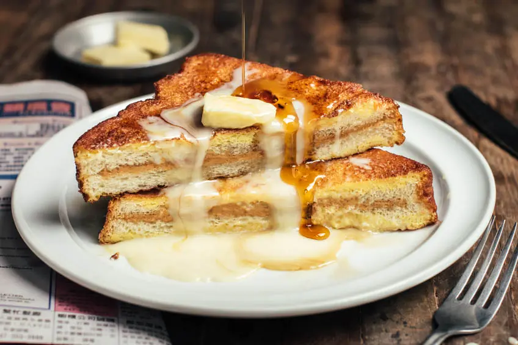

French toast Hong Kong

Description
Hong Kong French Toast (西多士) is a ubiquitous cha chan teng (Hong Kong Café) staple eaten as a sweet-savoury treat at afternoon tea. It is essentially a peanut butter-filled sandwich dipped in egg, shallow fried to golden perfection and always, always served with a pat of butter and condensed milk and/or syrup.
Condensed milk is a must for the true nostalgic experience. People prefer a bit of both condensed milk and maple syrup, as overkill as it may seem. Hong Kong French Toast is simple in concept and utterly indulgent.
Ingredients
- 2 thick slices white bread, (slightly stale works best)
- 2 Tbsp creamy peanut butter
- 1 pinch salt (omit if peanut butter is salted)
- 1 large egg, whisked well
- Canola oil (or your preferred high heat oil) for shallow frying
- 1 pat butter
- Condensed milk, for drizzling
- Maple syrup, for drizzling
Steps
- Spread peanut butter on one bread slice. Sprinkle a bit of salt if peanut butter is not salted. Sandwich the bread slices together.
- In a medium skillet that comfortably fits your sandwich, add enough oil such that it comes up ¾-inch or just a bit more than halfway up the side of your sandwich for shallow frying. Heat over medium heat until surface of the oil is shimmering (but not smoking) or when it is 350-370°F. with a thermometer.
- While the oil is heating up, coat sandwich in whisked egg, flipping a few times and rotating on all four edges to coat evenly and generously all over. You should have very little, if any, egg remaining.
- Gently slide sandwich into hot oil. Fry on first side until golden brown, flip and repeat. It browns quickly, about 45-60 seconds on each side. Lift and place on paper towel briefly to absorb excess oil.
- To serve, top with pat of butter, drizzles of condensed milk and/or maple syrup. Best enjoyed fresh!